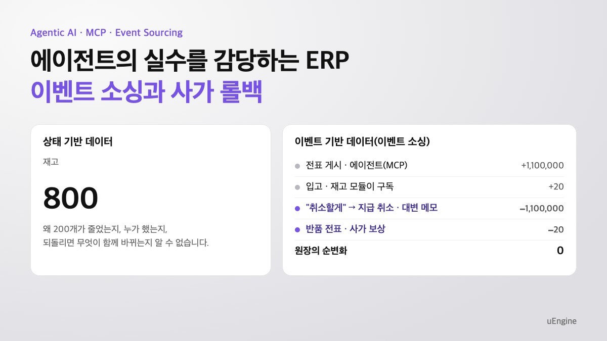
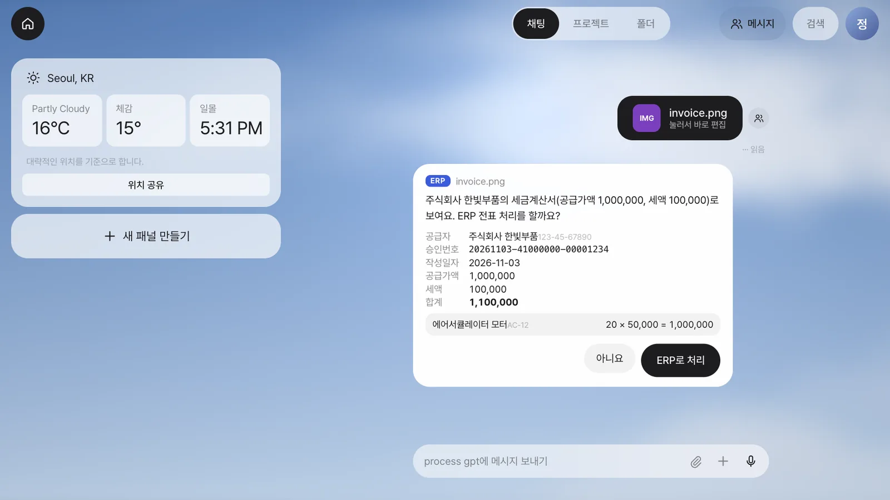
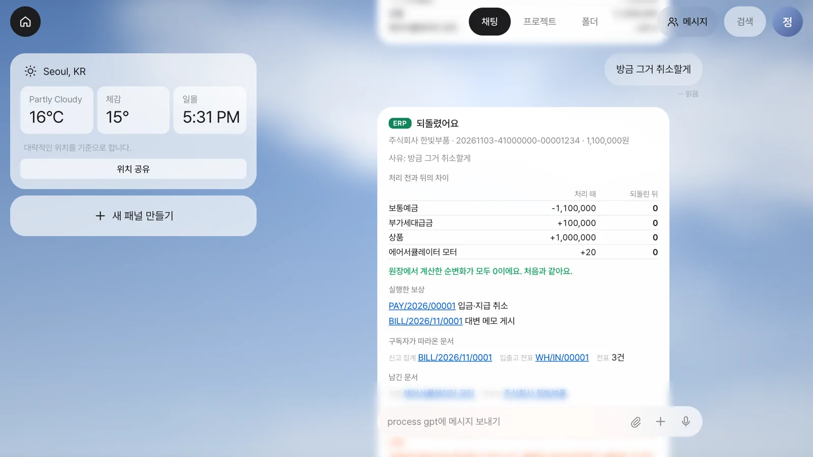
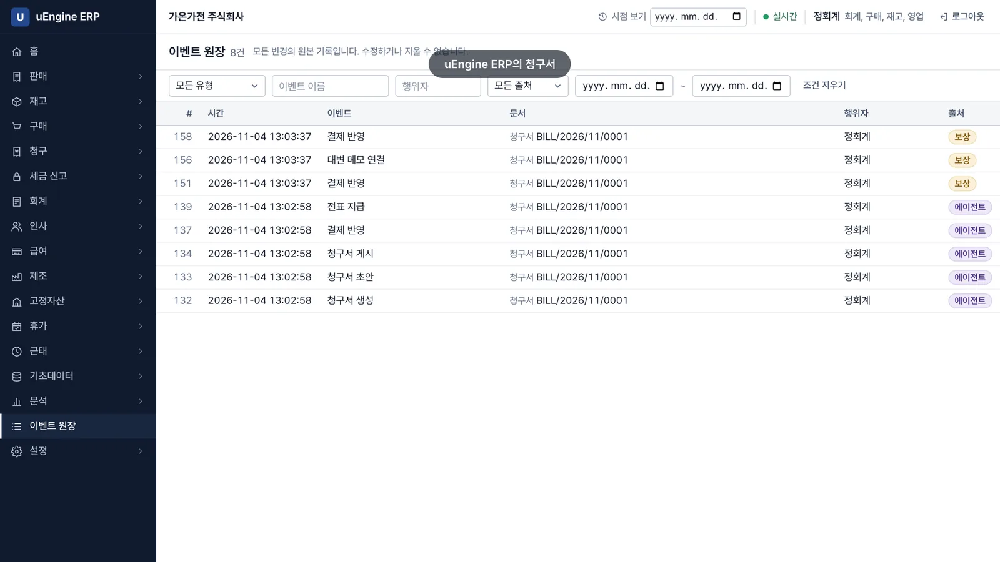
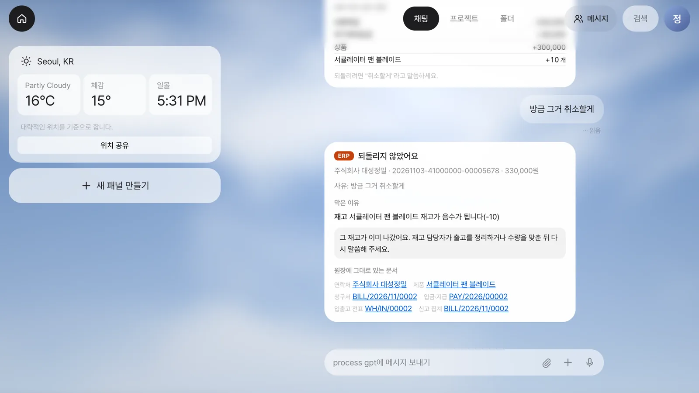
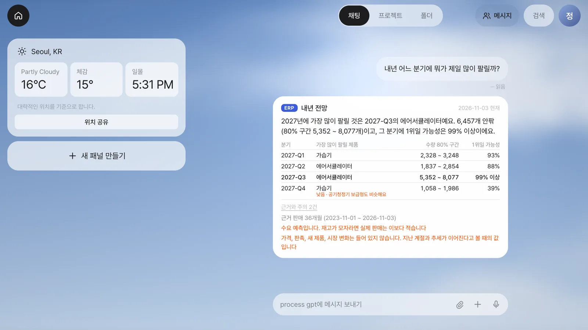
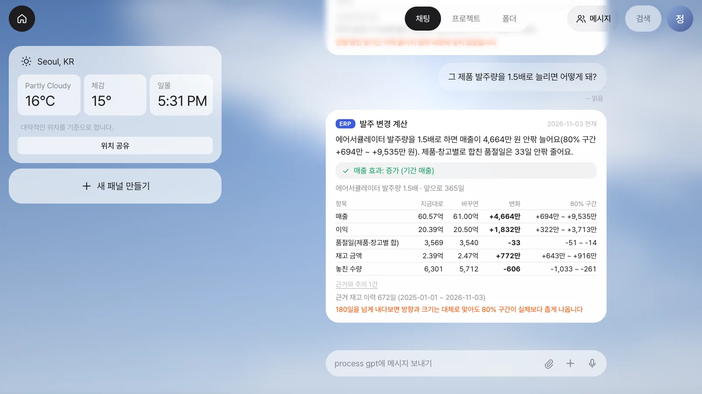

롱러닝 에이전틱 AI 시대를 위한 ERP 아키텍처 대전환: 왜 이벤트 소싱과 사가 롤백인가?

한눈에 보기: 상태 기반 시스템과 이벤트 소싱 기반 시스템
축구 전광판의 2대1은 점수만 말해 줍니다. 경기 기록이 있으면 전광판은 언제든 다시 만들 수 있지만, 전광판만으로 경기 기록을 되살릴 수는 없습니다. 상태 기반 시스템은 전광판이고, 이벤트 소싱 기반 시스템은 경기 기록입니다. 같은 일이 두 시스템에 어떻게 남는지 보세요.
| 시각 | 품목 | 재고 |
|---|---|---|
| 월요일 08:00 | 부품 A | 1,000 |
| 월요일 09:00 | 부품 A | 800 |
| 화요일 11:00 | 부품 A | 770 |
| 남는 것은 마지막 한 줄입니다 | ||
화요일 14시에 결재가 반려됐습니다. 200개가 왜 줄었는지 표에는 없습니다. 1,000으로 되돌리면 직원이 출고한 30개까지 사라집니다.
| 번호 | 시각 | 일어난 일 | 누가 | 수량 |
|---|---|---|---|---|
| 1 | 월 08:00 | 입고 | 창고 담당 | +1,000 |
| 2 | 월 09:00 | 자재 예약 (사가 41) | 에이전트 | -200 |
| 3 | 화 11:00 | 출고 | 창고 담당 | -30 |
| 4 | 화 14:00 | 결재 반려 (사가 41) | 관리자 | 0 |
| 5 | 화 14:00 | 예약 취소 (사가 41) | 서버 | +200 |
| 다 더한 값이 지금 재고입니다 | 970 | |||
반려는 5번 줄을 더해 처리합니다. 앞의 줄은 그대로 남고, 직원의 30개 출고도 그대로입니다.
설명을 위해 줄인 예입니다. 실제 시험에서 쌓인 줄은 7장에 있습니다.
줄에서 값은 언제든 다시 만들 수 있습니다. 값에서 줄은 다시 만들 수 없습니다.
| 비교 항목 | 상태 기반 시스템 (현재 값을 덮어씁니다) | 이벤트 소싱 기반 시스템 (일어난 일을 쌓습니다) |
|---|---|---|
| 저장하는 것 | 부품 A, 재고 770. 한 줄뿐입니다. | 위의 다섯 줄입니다. 재고는 줄을 더해 계산합니다. |
| 과거 분석: 월요일 10시 재고는? | 표에 없습니다. 백업이나 별도 이력에서 찾습니다. | 1~2번 줄을 더하면 800개입니다. |
| 감사: 200개는 왜 줄었나요? | 표에 없습니다. 따로 남긴 로그를 찾습니다. 빠지거나 어긋날 수 있습니다. | 2번 줄에 있습니다. 에이전트가 사가 41로 예약했습니다. |
| 되돌리기: 결재가 반려되면? | 1,000으로 덮으면 직원이 출고한 30개까지 사라집니다. | 5번 줄을 더합니다. 재고는 970개이고 1~4번 줄은 그대로입니다. |
| 에이전트의 실행: 이번 일의 범위는? | 대화나 별도 기록에서 찾습니다. | 사가 41이 붙은 2·4·5번 줄입니다. |
| 미래 예측: 품절로 못 판 수요는? | 판매 기록으로 예측합니다. 못 판 수요는 낮게 읽히기 쉬워 추정으로 보정합니다. | 날짜별로 줄을 더해 재고가 0이던 날을 찾아 반영합니다. 1년 전까지의 줄로 같은 예측을 돌려 실제와 대조합니다. |
| 실행 전 시험(what-if): 발주를 늘리면? | 필요한 이력부터 따로 모아야 합니다. | 쌓인 줄로 원안과 변경안을 나란히 계산합니다. 장부에 줄은 늘지 않습니다. |
| 비용 | 단순하고 익숙합니다. 대부분의 시스템에는 이것으로 충분합니다. | 저장 공간이 늘고 모듈 사이에 짧은 지연이 있습니다. 기존 시스템을 옮기는 비용도 큽니다. |
상태 기반 시스템도 이력 테이블이나 데이터 창고를 더해 상당 부분 보완할 수 있습니다. 차이는 그 기록이 원본이냐 덧붙인 것이냐입니다.
1. AI가 답만 하던 시대에서 일을 하는 시대로
기업이 AI에 맡기려는 일이 달라지고 있습니다. 질문에 답하는 챗봇을 넘어, 회사 시스템에 들어가 발주를 넣고 물류 배차를 바꾸는 에이전트로 나아갑니다. 답변의 정확성뿐 아니라 실제로 바꾼 업무의 결과까지 책임져야 합니다.
이런 일은 몇 초에 끝나지 않습니다. 원자재 부족을 찾아 대체 공급사를 알아보고, 구매 승인을 올리고, 입고한 뒤 생산 일정을 바꾸는 데는 며칠이 걸립니다. 이렇게 오래 이어지는 업무를 롱러닝이라고 합니다.
그사이 AI가 잘못 판단하거나 협력사 재고가 품절될 수 있습니다. 관리자가 결재를 반려할 수도 있습니다. 다른 직원의 업무도 계속됩니다. 실패했다는 답변만으로는 이미 예약한 자재와 만들어 놓은 발주서가 정리되지 않습니다. 핵심 질문은 하나입니다.
이미 해 버린 일을 어떻게 안전하게 되돌릴 것인가?
2. MCP는 연결을 표준화했지만 되돌리기는 정하지 않았습니다
예전에는 AI를 연결하려면 시스템마다 연동 코드를 짜야 했습니다. AI와 외부 도구의 공통 연결 규약인 MCP는 이를 위한 표준 포트입니다. 공식 문서가 USB-C에 비유하는 이유입니다. 연결 방식을 맞추면 에이전트가 정해진 규칙으로 도구를 부를 수 있습니다.
업무는 세 단계로 이어집니다.
- 조회: 부품 재고와 최근 납품 단가를 읽습니다.
- 판단: 목표와 제약을 따져 할 일과 순서를 정합니다.
- 실행: 자재를 예약하고 발주서를 만듭니다.
문제는 실행입니다. 자재 예약과 발주서 작성을 끝냈는데 승인이 거절되면 앞의 일을 되돌려야 합니다. MCP 도구 스펙의 2025-06-18 버전은 되돌리기를 정의하지 않습니다. MCP의 결함이 아니라 역할 구분입니다. 도구 뒤의 업무 시스템, 즉 ERP가 맡아야 합니다.
3. 덮어쓰는 ERP에서 생기는 세 가지 문제
기존 ERP는 표의 값을 최신으로 덮어쓰는 기준 장부(SoR, System of Record)입니다. 이런 방식이 앞의 표에서 말한 상태 기반입니다. 사람이 화면에서 저장 버튼을 누를 때는 익숙하고 직관적인 방식이었습니다. 하지만 현재 값만 남기면 며칠 뒤 에이전트의 일을 취소할 때 문제가 생깁니다.
이유가 사라집니다
재고가 1,000 → 800으로 바뀌면 현재 값에는 800만 남습니다. 어떤 일 때문에 200개가 줄었는지 모르면 취소할 대상도 알기 어렵습니다. 이유 없이 숫자만 되돌리면 실제 업무와 기록이 어긋납니다(State Drift).
시간차를 못 견딥니다
월요일 오전 9시에 자재를 예약하고 화요일 오후에 결재가 반려될 수 있습니다. 월요일에 이미 확정된 처리는 화요일에 DB의 ROLLBACK으로 취소할 수 없습니다. 예전 값으로 덮으면 그사이 다른 직원이 한 일까지 사라집니다. 이를 분실 갱신(Lost Update)이라고 합니다.
지우면 감사에서 문제가 됩니다
회계 장부와 제조 이력은 조용히 지우면 안 됩니다. 누가 언제 바꿨고 왜 취소했는지 남아야 합니다. 미국 FDA의 21 CFR 11.10(e)도 적용 대상 기록의 변경이 이전 기록을 가리면 안 된다고 요구합니다. 다만 저장 방식을 지정하는 규정은 아닙니다.
이력 테이블을 따로 만들어 보완할 수 있지만, 그 기록은 부가물이라 빠지거나 원본과 어긋날 수 있습니다.
4. 해결책: 감사 기록을 원본으로 삼고, 지우는 대신 취소 행동을 더합니다
이벤트 소싱: 지우지 않는 장부
통장에 +10만 원, -3만 원, +5만 원을 차례로 적으면 잔고는 그 합입니다. 앞에서 본 다섯 줄이 바로 통장의 거래 내역입니다. 이 한 줄 한 줄을 이벤트라고 합니다.
보통 시스템은 현재 값을 원본으로 두고 감사 기록을 따로 남깁니다. 이벤트 소싱은 반대로 감사 기록 자체를 원본으로 삼고, 현재 값은 거기서 계산합니다. 여기서 감사 데이터는 화면의 재고를 계산하고 취소할 일을 찾는 근거입니다.
에이전트의 일도 이렇게 쌓입니다. 이미 일어난 일이므로 이벤트 이름은 과거형입니다.
StockReservedByAgent: 부품 200개 예약
PurchaseOrderCreated: 발주서 작성
ManagerApprovalRejected: 관리자 승인 거절Pat Helland가 「Immutability Changes Everything」(2015)에서 쓴 “회계사는 지우개를 쓰지 않는다”는 비유처럼, 잘못 처리한 사실도 지우지 않고 정정한 사실을 더합니다.
사가: 없던 일로 하지 않고 취소하는 행동을 더합니다
여러 단계로 된 업무를 묶어 두고, 중간에 멈추면 끝낸 단계를 거꾸로 취소하는 방식이 사가입니다. 이때 원래 일의 효과를 상쇄하는 취소 행동을 보상 트랜잭션이라고 합니다. Garcia-Molina와 Salem의 논문 「Sagas」(1987)에서 나온 개념입니다.
비행기 예약을 취소할 때 과거의 좌석 수로 덮어쓰지 않습니다. 예약 철회라는 새 행동을 더합니다. 그래야 그사이 들어온 다른 예약을 건드리지 않습니다. 공장에서도 출고한 자재의 공정이 취소되면 출고 기록을 지우는 대신 재입고를 처리합니다.
기록이 있다고 모든 취소가 가능한 것은 아닙니다. 이미 이어진 업무가 있는지 확인하고, 취소할 수 없는 상황은 사람이 처리하도록 남겨야 합니다.
| 비교 항목 | 덮어쓰기 ERP의 되돌리기 | 이벤트 소싱 + 사가 |
|---|---|---|
| 처리 방식 | 이전 값으로 덮어씁니다 | 반대 효과를 내는 취소 기록을 더합니다 |
| 과거 맥락 | 당시 조건을 별도 이력에서 찾아야 합니다 | 처음 실행과 실패, 취소가 함께 남습니다 |
| 다른 업무와의 간섭 | 예전 값 복원 시 중간 변경을 잃을 수 있습니다 | 후속 업무를 확인하고 자기 일의 효과만 상쇄합니다 |
| 감사와 추적 | 별도 기록이 없으면 취소 경위를 알기 어렵습니다 | 무엇을 했고 왜 취소했는지 장부에 남습니다 |
5. 왜 둘이 함께여야 하나요?
“기존 ERP 위에 사가만 얹으면 되지 않나요?” 만들 수는 있습니다. 사가는 원래 일반 DB 위에서 고안됐습니다. 다만 제대로 되돌리려면 두 가지가 필요합니다.
- 그때의 값을 알아야 합니다. 환율과 할인을 적용해 1,250원에 100개를 예약했다면, 지금 단가가 아니라 그때 조건과 수량으로 취소해야 합니다. 업무 기록인 이벤트에는 그 값이 들어 있습니다. 현재 값만 있으면 별도 이력에서 다시 찾아야 합니다.
- 두 번 와도 안전해야 합니다. 같은 요청이 반복돼도 결과가 같아야 합니다(멱등성). 응답이 끊겨 취소 요청이 두 번 오면 100개를 취소하려다 200개가 취소될 수 있습니다. 이벤트의 버전과 사가 번호, 요청 식별자로 두 번째 요청을 걸러 냅니다. 이벤트 소싱이라고 저절로 되는 것은 아니며 이 확인까지 구현해야 합니다.
고정된 업무 흐름은 단계와 취소 방법을 미리 설계합니다. 에이전트는 상황에 따라 도구를 고르므로, 도구별 취소 규칙을 정해 두어도 끝난 뒤 기록을 읽어 되돌릴 범위를 정해야 합니다. 덮어쓰기 ERP에서는 그 기록을 따로 쌓아야 하니 장부를 하나 더 만드는 셈입니다.
6. 같은 장부로 실행 전에 먼저 돌려 봅니다
지운 적이 없으니 과거도 읽을 수 있습니다. 지난여름 제습기 판매가 적었던 이유가 수요 부족인지 품절인지 재고 기록에서 구별합니다. 판매 숫자만으로는 놓칠 차이입니다.
조건을 바꿔 보는 계산(what-if)은 원안과 변경안을 나란히 계산합니다. 장부에는 아무것도 남기지 않습니다. 숫자는 LLM이 지어내지 않고 ERP 화면과 같은 모델이 계산합니다. 사람이 묻고 에이전트가 답하는 데까지 구현했으며, 스스로 계산해 결정하는 단계는 아직입니다.
가상 회사 60곳에서 분기 매출 오차 중앙값은 6.6%였습니다. 가상 회사 시험이므로 실제 회사에서는 이보다 나쁠 수 있습니다. 1년 앞을 보는 계산은 예측 구간이 좁게 나와서 180일을 넘으면 경고합니다.
먼저 돌려 보고, 실행하고, 잘못되면 되돌립니다. 세 가지가 모두 같은 장부에서 나옵니다.
7. 실제로 돌려 봤습니다
우리가 직접 만든 이벤트 소싱 ERP인 uEngine ERP와 에이전트인 Process GPT Lite를 MCP로 연결해 가상 회사 가온가전으로 돌렸습니다.
세금계산서를 올리고, 말로 취소합니다
세금계산서를 올리고, 말로 취소합니다
- 올리면 묻습니다. 경리 담당자가 채팅에 세금계산서 파일만 올립니다. Lite가 공급자와 금액(1,100,000원)을 읽어 “ERP로 처리할까요?”라고 묻습니다.

공급자와 금액을 읽고 처리할지 묻습니다
- 수락하면 처리합니다. 거래처와 제품을 찾고 전표 게시와 지급까지 처리합니다. 입고, 회계 전표, 부가세 집계는 재고·회계·세금 모듈이 그 기록을 보고 따라 만듭니다. 이 일 전체에 번호 하나인 사가 번호가 붙습니다.
- 말로 취소합니다. “방금 그거 취소할게”라고 말합니다. 취소를 LLM에게 맡기지 않습니다. 서버가 그 번호로 범위를 읽어 취소해도 되는지 검사합니다. 지급 취소와 대변 메모(반대 전표)를 원래 실행의 역순으로 처리합니다. 재고 반품과 역분개는 각 모듈이 따라 만듭니다. 공급자에게 수정세금계산서를 요청하라는 안내도 합니다. ERP 내부 취소가 외부 세금 문서까지 고쳐 주지는 않습니다.

서버가 확인하고 지급과 전표를 취소합니다
- 장부에서 숫자로 확인합니다. 처음 한 일과 취소가 모두 남고 지운 기록은 없습니다.

처음 일과 취소가 모두 장부에 남습니다
이 시험에서 실제로 쌓인 42줄 중 일부입니다. 129~149번은 처리, 150~170번은 취소입니다. 지운 줄은 없습니다.
| 번호 | 일어난 일 | 문서 | 누가 |
|---|---|---|---|
| 134 | InvoicePosted 청구서 게시 | BILL/2026/11/0001 | 에이전트(MCP) |
| 136 | PaymentPosted 지급 게시 | PAY/2026/00001 | 에이전트(MCP) |
| 140 | JournalEntryPosted 회계 전표 게시 | BILL/2026/11/0001 | 회계 모듈 |
| 146 | PickingValidated 입고 완료 | WH/IN/00001 | 재고 모듈 |
| 148 | VatEntryRecorded 부가세 집계 | BILL/2026/11/0001 | 세금 모듈 |
| 153 | PaymentCancelled 지급 취소 | PAY/2026/00001 | 취소 처리(서버) |
| 157 | InvoicePosted 대변 메모 게시 | RBILL/2026/11/0001 | 취소 처리(서버) |
| 162 | JournalEntryPosted 반대 전표 게시 | RBILL/2026/11/0001 | 회계 모듈 |
| 167 | PickingValidated 반품 완료 | WH/OUT/00001 | 재고 모듈 |
| 169 | VatEntryRecorded 집계 반영 | RBILL/2026/11/0001 | 세금 모듈 |
| 항목 | 처리 때 순변화 | 되돌린 뒤 순변화 |
|---|---|---|
| 보통예금 | -1,100,000원 | 0 |
| 부가세대급금 | +100,000원 | 0 |
| 상품 | +1,000,000원 | 0 |
| 에어서큘레이터 모터 | +20개 | 0 |
이번 업무의 효과가 상쇄됐다는 뜻입니다. 회사 전체 잔액이 0이라는 뜻은 아닙니다.
- 멈춰야 할 때는 멈춥니다. 그사이 물건이 출고됐거나 회계 기간이 잠겼거나 다른 사람이 이어서 처리했다면 이유를 말하고 아무것도 바꾸지 않습니다. 누가 후속 처리를 맡아야 하는지도 알려 줍니다.

취소할 수 없으면 이유를 알리고 멈춥니다
서버가 취소 범위를 검사합니다. 취소할 수 없으면 아무것도 바꾸지 않습니다.
채팅에 그냥 물어봅니다
채팅으로 묻고, 장부를 바꾸지 않고 계산합니다
이번에는 3년치 기록이 있는 다른 가상 회사입니다. 평소 쓰는 채팅창에 말을 던지기만 하면 됩니다.
- “내년 어느 분기에 뭐가 제일 많이 팔릴까?” 분기별 1위 제품과 가능성을 답합니다. 2027년 3분기 에어서큘레이터의 1위 가능성은 99% 이상입니다. 4분기 가습기는 39%에 그칩니다. 모를 때는 모른다고 답합니다.

분기별 1위 제품과 가능성을 답합니다
- “이 예측 믿어도 돼?” 1년 전 장부로 같은 계산을 해 실제와 대조합니다. 끝난 3개 분기의 매출은 모두 예측 구간 안에 들었고, 1위 제품은 2개 분기에서 맞았습니다.
- “그 제품 발주량을 1.5배로 늘리면 어떻게 돼?” 앞으로 1년 매출이 4,664만 원 안팎 늘 것으로 답합니다. 재고 금액도 772만 원 안팎 늘어납니다.

발주량을 늘릴 때 매출과 재고 변화를 계산합니다
- “가격을 10% 올리면?” 고객 반응은 기록에 없으므로 방향을 말하지 않습니다. 판매량이 19.4% 줄어도 이익이 같다는 손익 분기만 말합니다.
이 대화로 장부에 쌓인 새 기록은 0건입니다. 모두 가상 회사의 숫자입니다.
확인한 범위
실제 LLM과 실제 MCP로 전표 처리, 말로 취소, 질문 대화를 각 5회 돌려 모두 통과했습니다. 가상 회사와 로컬 환경의 시험이며 운영 실적이 아니고, Process GPT Lite 연동은 곧 공개합니다. 세금 관련 화면은 전문가 검수 전이며, 전자세금계산서 발행과 전자신고는 앱이 직접 하지 않습니다. 실제 Supabase 클라우드 설치는 아직 시험하지 않았습니다. 파일에서 읽은 공급자와 금액은 사람이 카드에서 확인해야 합니다.
8. 결론: 성패는 모델의 지능이 아니라 실수를 감당할 구조에서 갈립니다
최신 LLM과 프롬프트에만 매달리기 쉽습니다. 하지만 에이전트가 ERP를 움직이는 순간 핵심은 달라집니다. “AI의 실수를 안전하게 감당할 구조가 있는가”를 물어야 합니다.
모든 시스템에 이벤트 소싱이 필요한 것은 아닙니다. Microsoft의 Event Sourcing pattern 문서도 대부분은 전통적 방식으로 충분하다고 설명합니다. 에이전트가 거래와 재고와 지급을 바꾸는 시스템부터 살펴보세요. 도입 전에 다음 네 가지를 물어보세요.
- 실행 전에 무엇이 달라질지 물어볼 수 있나요?
- 무엇을 했는지 설명할 수 있나요?
- 다른 사람의 일을 건드리지 않고 되돌릴 수 있나요?
- 안 되면 멈추고 책임자에게 넘길 수 있나요?
성패를 가르는 것은 모델의 지능이 아니라 실수를 감당할 구조입니다.
Industry AI Solutions
세 제품의 기록 방식과 지원 범위는 다릅니다. 아래 기능의 수치와 화면은 가상 회사와 합성 데이터로 확인했습니다.
| 제품 | 지금 상태 |
|---|---|
| uEngine ERP | 되돌리기와 미리 돌려 보기를 구현했습니다. 무료(MIT)이며 내 Supabase를 연결하는 방식입니다. 앱과 소스를 공개했고 클라우드 설치는 미시험입니다. |
| uEngine MES | 이벤트 소싱 제조 실행 시스템의 시연용 참조 구현입니다. 소스는 비공개이며 시연은 문의하세요. 실행 기능마다 취소 짝을 두었지만 사람이 쓰는 되돌리기 화면은 없습니다. |
| uEngine WMS | Process GPT 샘플 앱입니다. MCP 도구 83개와 소스를 공개하며 무료로 직접 설치합니다. 이벤트 소싱이 아닌 감사 로그 방식이고 되돌리기 기능은 없습니다. |
업무 기록과 함께 사람의 승인, 시스템 사이의 의미 연결, 에이전트가 맡을 일의 선택도 준비해야 합니다.
| 필요한 것 | 제공하는 것 |
|---|---|
| 에이전트가 일하는 프로세스와 사람의 승인 | Process GPT, Process GPT Lite |
| 되돌릴 수 있는 업무 기록 | uEngine ERP, uEngine MES |
| 여러 시스템의 의미를 잇는 층 | Ontological Studio, Ontological DB |
| 어느 일에 에이전트를 둘지 찾는 일 | Agent Storming 워크숍 |
참고 자료
- uEngine ERP 앱: https://uengine-oss.github.io/uengine-erp/
- uEngine ERP 소스: https://github.com/uengine-oss/uengine-erp
- Model Context Protocol, Introduction: https://modelcontextprotocol.io/introduction
- Model Context Protocol, Tools (2025-06-18): https://modelcontextprotocol.io/specification/2025-06-18/server/tools
- H. Garcia-Molina, K. Salem, Sagas (1987): https://www.cs.princeton.edu/techreports/1987/070.pdf
- P. Helland, Immutability Changes Everything (CIDR 2015): https://www.cidrdb.org/cidr2015/Papers/CIDR15_Paper16.pdf
- Microsoft, Event Sourcing pattern: https://learn.microsoft.com/en-us/azure/architecture/patterns/event-sourcing
- 21 CFR 11.10: https://www.law.cornell.edu/cfr/text/21/11.10
- A. Cairns, Event Sourcing Explained using Football: https://acairns.substack.com/p/many-articles-plus-event-sourcing
- Confluent, Storing Data as Events: https://developer.confluent.io/courses/event-sourcing/storing-data-as-events/